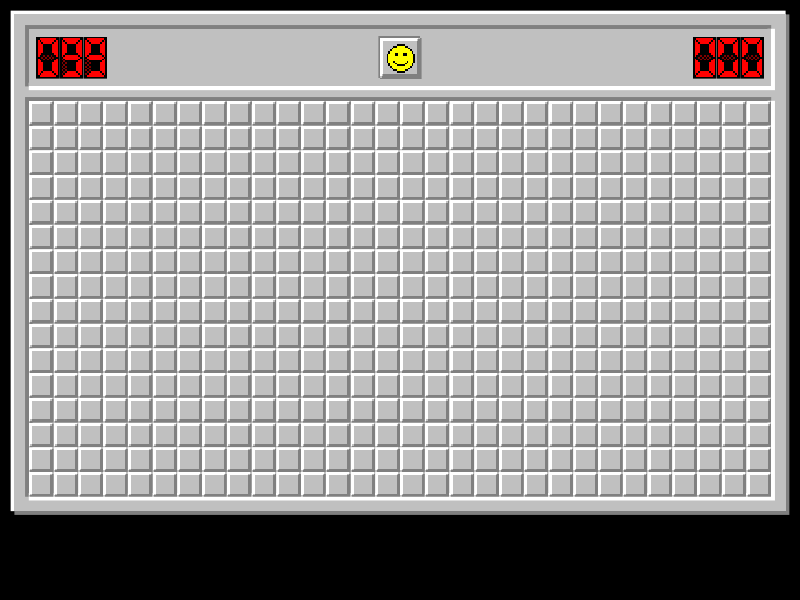

Play minesweeper in R, replay your games and save them to GIF.
Installation
You can install minesweeper with:
install.packages("minesweeper")You can install the development version of minesweeper from GitHub with:
# install.packages("devtools")
devtools::install_github("hrryt/minesweeper")Example
library(minesweeper)
x11() # Unix-specific example
recording <- play_minesweeper()
replay_minesweeper(recording)
# install.packages("gifski")
save_minesweeper_gif(recording)
dev.off()